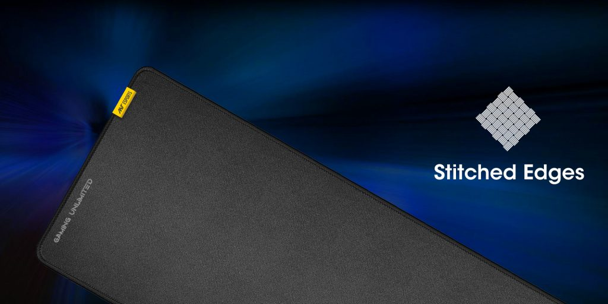
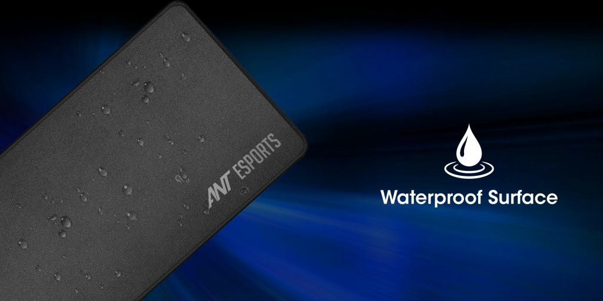
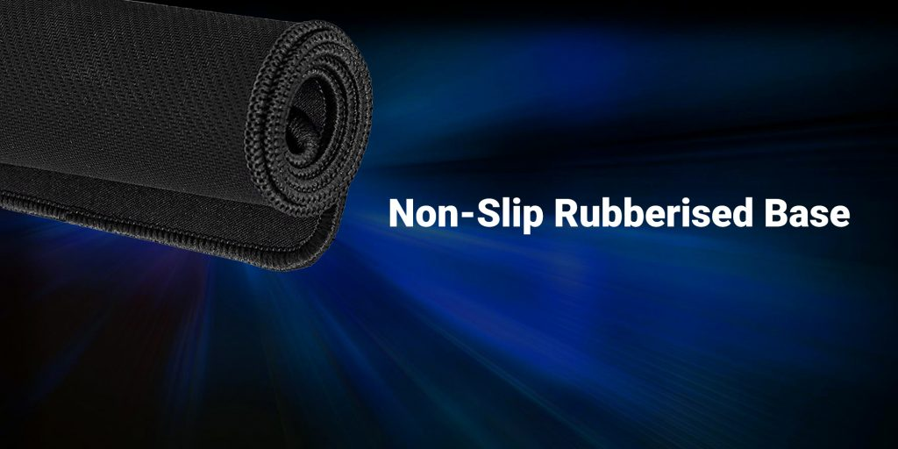

The densely woven fabric pad provides a surface that feels smooth to the touch and is optimized for your preference.
MP320S large extended mouse pad has delicate edges which can prevent wear
deformation and degumming in prolonged use.

The Ant Esports MP320S Gaming Mouse Pad features a soft cloth surface for wrist comfort. Machine washable pure black mouse pad multipack which has a great locking-color effect.
Easy to wipe clean and won’t fade with repeated cleaning even Liquid stains can be cleaned with water for continuous use

A textured natural rubber underside is designed to hold fast when the action gets frenetic.
Mouse Pad -Dense anti-slip rubber base provides a heavy grip preventing sliding or movement of mouse pads available for any flat hard tabletop surface.
Low friction is top-material for accurate tracking of the movement of the cursor.